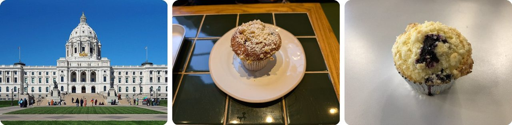
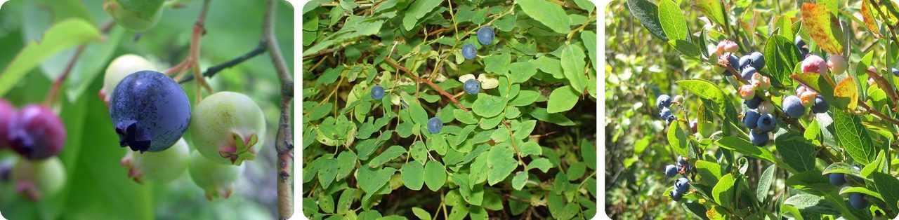
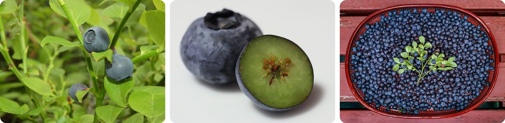
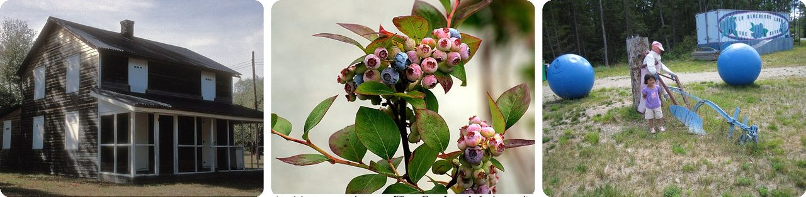
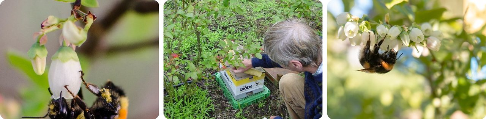
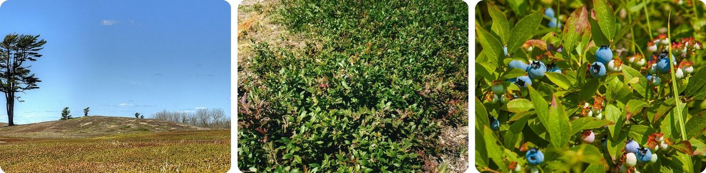
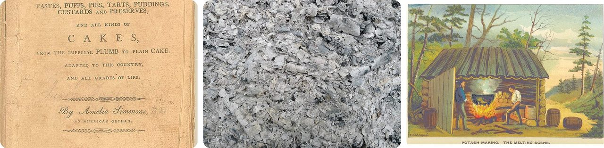
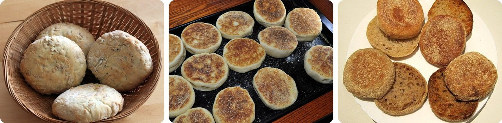
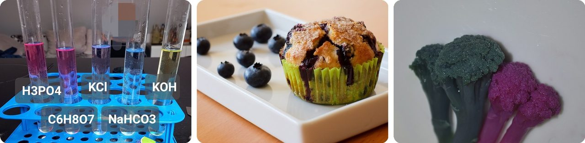
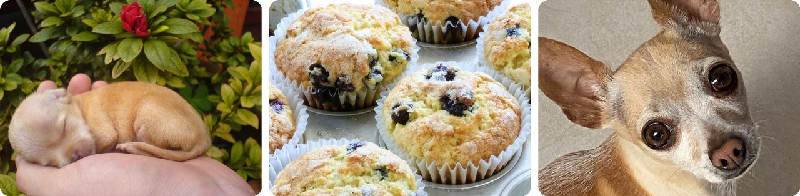

🌍 Top 10 Blueberry Muffins
Oct 8, 2026
1. 🇺🇸 Third graders made blueberry Minnesota's state muffin

In 1988, Minnesota made the blueberry muffin its official state muffin. The idea came from a third-grade class at South Terrace Elementary School in Carlton, a small town in the north of the state.
The kids had heard that a class in Massachusetts got the corn muffin made a state symbol there, and they wanted one too. A state representative, Mary Murphy, brought their bill to the legislature, and it became law.
They picked blueberry on purpose. Wheat is a big crop in southern Minnesota, and wild blueberries grow all over the north, so one muffin covers the whole state.
It's a map of Minnesota you can eat for breakfast.
2. 🫐 Blueberries are blue because of their wax, not their juice

The color in blueberry skin is actually a very dark red. That's why blueberry juice comes out purple-red, never sky blue.
The blue comes from the dusty coating you can rub off with your thumb, called the "bloom." In 2024, scientists at the University of Bristol found that this bloom is a jumble of tiny wax crystals. The crystals bounce blue and ultraviolet light back at your eye, so the dark berry underneath looks blue.
The berries don't start that way. They're pale green at first, then reddish-purple, and only turn blue when they're ripe.
Think of it as a dark berry wearing a frosted blue jacket.
3. 🌲 Europe's "blueberry" is blue all the way through

In much of Europe, the word for "blueberry" means a different plant: the bilberry, a small wild cousin about 1 cm across, roughly the size of a pea. Swedes call it blåbär and Scots call it blaeberry.
Cut a store-bought blueberry in half and the inside is pale green. Its color pigments sit only in the skin. A bilberry has them in the skin and the flesh, so it's dark all the way through.
That's why bilberries stain your hands, teeth and tongue deep blue or purple. In Britain they were even used to dye food and clothes.
Basically, one is a painted ball and the other is solid color.
4. 🇺🇸 Farmed blueberries came from a search for two perfect bushes

Until the early 1900s, nobody planted blueberries as a farm crop; people picked them from wild bushes. Then Elizabeth White, the daughter of a cranberry farmer in the New Jersey Pine Barrens, teamed up with a government plant scientist, Frederick Coville, around 1911.
White paid local woodsmen one to three dollars for every wild bush they found with berries at least 5/8 inch wide, about the size of a marble. Of the 120 bushes they collected, only two were good enough. From those two, they bred thousands of new bushes.
In 1916 they sold the first farmed blueberry crop, under the name "Tru-Blu-Berries." White even had the idea of packing them in cellophane after seeing it wrapped around candy.
The blueberries in your muffin go back to a bush someone was paid a few dollars to find in the woods.
5. 🐝 Blueberry flowers only give up their pollen to a buzz

Blueberry flowers hang down like little bells. Inside, the pollen is locked in tubes with just a tiny hole at the tip, so it doesn't simply fall out.
A bumblebee grabs the flower and vibrates its flight muscles fast. The whole flower shakes, and pollen pours out through the hole. This is called buzz pollination, and honeybees can't do it.
Bumblebees also fly in colder, wetter weather than honeybees. That's why some wild blueberry growers bring in bumblebees on top of the honeybee hives they rent.
In other words, it's a salt shaker that only works when you shake it at the right speed.
6. 🇺🇸 Maine sets its wild blueberry fields on fire on purpose

Maine's wild blueberries grow on a low shrub, from ankle to knee high. Nobody plants them. They grow in natural open fields called "barrens," and the wild blueberry is Maine's official state fruit.
Every couple of years, growers burn or mow the plants right down to the ground. That clears out competing shrubs and pushes the underground stems to spread and send up new shoots. Native Americans burned land in eastern Maine for the same reason long before.
Because a field rests after it's cut back, only about half of Maine's 110,000 acres of blueberries is picked in any one year. In Acadian French, a blueberry field is even called a brûlis, from the word for "burnt."
It's a haircut for a whole field, done with fire.
7. 🇺🇸 The first American cookbook helped muffins rise with wood ash

A blueberry muffin doesn't rise with yeast. It's a "quick bread," puffed up by a chemical that makes gas bubbles in the batter. This style of muffin was born in North America in the 1800s.
A big step came in 1796, when Amelia Simmons published American Cookery, the first known cookbook written by an American. It introduced pearlash, an early cousin of baking soda, as a way to make cakes rise.
Pearlash came from burned wood. People made potash from wood ashes, then baked it in a kiln until a fine white powder was left. It mattered so much that the very first US patent, in 1790, went to a better way of making it.
Basically, your muffin's baking soda has a great-great-grandparent that came out of a fireplace.
8. 🇬🇧 The original muffin was flat and sold by men with bells

In England, a "muffin" first meant a flat, round yeast bread cooked on a griddle, what Americans call an English muffin. The word first shows up in print in 1703.
In the 1700s and 1800s, "muffin men" walked the streets ringing handbells and selling muffins door to door, back when most homes didn't have their own oven. The bells got so common that in 1839 Parliament passed a bill to ban the ringing. The sellers ignored it.
The nursery rhyme "Do you know the muffin man, who lives on Drury Lane?" was first written down around 1820. Muffin men kept walking their rounds until the Second World War.
Think of it as the ice cream truck, but for warm bread.
9. 🟢 Too much baking soda can turn blueberries green

The color in blueberries comes from anthocyanins (natural plant pigments that change color with acidity). They're red in sour stuff like vinegar, purple in plain water, and greenish-yellow in alkaline stuff like baking soda.
Most muffin recipes balance the baking soda with something sour, like buttermilk or lemon juice. Add too much soda and the leftover pushes the berry juice toward green, so you get greenish streaks around the berries.
Red cabbage juice does the same trick, which is why science classes use it to test whether a liquid is acidic or not.
In other words, your muffin is a chemistry test that tells you the recipe was off.
10. 🐶 A chihuahua's face can pass for a blueberry muffin

On March 10, 2016, Karen Zack posted a grid of photos on Twitter with one question: "chihuahua or muffin?" A tan chihuahua's two dark eyes and dark nose look almost exactly like three blueberries on a golden muffin top.
It spread fast, and she followed it with more pairs, like puppies or bagels and Labradoodles or fried chicken.
Then AI researchers picked it up. "Chihuahua or muffin" became a classic test of whether image-recognition software can tell look-alikes apart, and a 2024 research paper even named its benchmark "Muffin or Chihuahua?"
Three dark dots on a golden bump: your brain sees a face, and a computer just isn't sure.
Fun fact
The Bristol scientists who explained blueberry color went one step further. They scraped the wax off the berries and let it form crystals again on a piece of card, and the card turned blue, with a coating only about two thousandths of a millimeter thick. The same wax trick colors damsons, sloes and juniper berries. Color made by tiny structures instead of pigment is called structural color, and it's also behind the shimmer of peacock feathers and blue morpho butterflies: next time, the most dazzling structural colors in nature.
Photo credits (Wikimedia Commons)
- #1: Minnesota State Capitol 2017.jpg by McGhiever, CC BY-SA 4.0
- #1: Blueberry muffin - GAIL's 2025-03-10.jpg by Andy Li, CC0
- #1: 2019-11-25 08 16 03 A homemade blueberry muffin in the Dulles section of Sterling, Loudoun County, Virginia.jpg by Famartin, CC BY-SA 4.0
- #2: Vaccinium corymbosum (Northern highbush blueberry).jpg by Green Yoshi, CC BY-SA 3.0
- #2: Highbush blueberries.jpg by Ryjil Christianson, CC BY-SA 3.0
- #2: Vaccinium corymbosum 1.jpg by Meggar at English Wikipedia, CC BY-SA 3.0
- #3: Blueberry - Vaccinium myrtillus (fruit).jpg by MAKY.OREL, CC0
- #3: Heidelbeeren Querschnitt.jpg by Slashme, CC0
- #3: Fresh bilberries picked in Tuntorp 4.jpg by W.carter, CC BY-SA 4.0
- #4: WHITESBOG HISTORIC DISTRICT.jpg by JERRYE & ROY KLOTZ MD, CC BY-SA 3.0
- #4: Vaccinium corymbosum 'Blue Crop' o Arándano alto (flickr) by M. Martin Vicente, CC BY 2.0
- #4: Hand Raking (flickr) by cambodia4kidsorg, CC BY 2.0
- #5: Bumblebee on a Blueberry Blossom (flickr) by Bre LaRow, CC BY 2.0
- #5: BlueberryPollinationByBumblebees.jpg by KVDP, Public domain
- #5: bumblebee on the flowers of blueberry (flickr) by dazhetak, CC BY 2.0
- #6: Blueberry Barren, Jonesboro, Maine 8045 (9105599766).jpg by Kim Carpenter, CC BY 2.0
- #6: Lowbush Blueberry plants (3711203034).jpg by Leonora (Ellie) Enking from East Preston, United Kingdom, CC BY-SA 2.0
- #6: Wild Blueberry Bush (19456699639).jpg by Paul VanDerWerf from Brunswick, Maine, USA, CC BY 2.0
- #7: American Cookery (1st Ed, 1796, cover).jpg by Amelia Simmons, Hudson & Goodwin, Public domain
- #7: Wood ash.jpg by Laurentius, CC BY-SA 3.0
- #7: CONANT(1898) p132 Potash making- the melting.jpg by E S Shrapnel, Public domain
- #8: 2016-02-07 English Muffins anagoria.JPG by Anagoria, CC BY 3.0
- #8: Mmm...English muffins (5393409247).jpg by jeffreyw, CC BY 2.0
- #8: English muffins wheat rye.jpg by GeoTrinity, CC0
- #9: Red cabbage changing colors.jpg by Pań w żółtym kapeluszu, CC BY-SA 3.0
- #9: Muffins aux myrtilles - Blueberry muffins (flickr) by balise42, CC BY-SA 2.0
- #9: Purple Cauliflower Acid Base.jpg by ProboscideaRubber15, CC BY-SA 4.0
- #10: Chihuahua puppy (flickr) by Jose Antonio Tovar, CC BY 2.0
- #10: Blueberry muffins for breakfast (flickr) by Steven Jackson Photography, CC BY 2.0
- #10: Chihuahua lala café claro.jpg by Banne27, CC BY-SA 4.0


.jpg){kind=link}


.jpg){kind=link}


.jpg){kind=link}
.jpg){kind=link}
.jpg){kind=link}
.jpg){kind=link}

_p132_Potash_making-_the_melting.jpg){kind=link}

.jpg){kind=link}